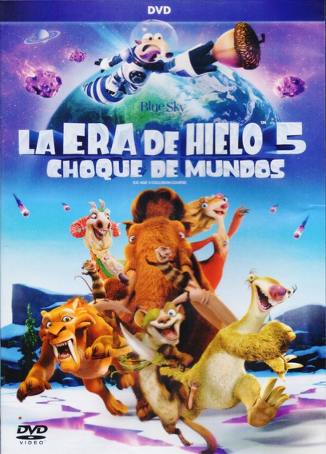

Ice Age: Collision Course (llamada Ice Age: El gran cataclismo en España y La Era de Hielo: Choque de Mundos en Hispanoamérica) es una película estadounidense de 2016 de animación por ordenador y de género familiar y de aventuras. Fue dirigida por Mike Thurmeier y Galen T. Chu. Se trata de la quinta entrega de la saga Ice Age, siendo una secuela del título de 2012 La Era de Hielo 4.
|  |
| Productor : Lori Forte |
| Pais : Estados Unidos |
| Idioma: Ingles |
| Fecha de estreno: 7 de julio de 2016 |
| Duracion:1h 40m |